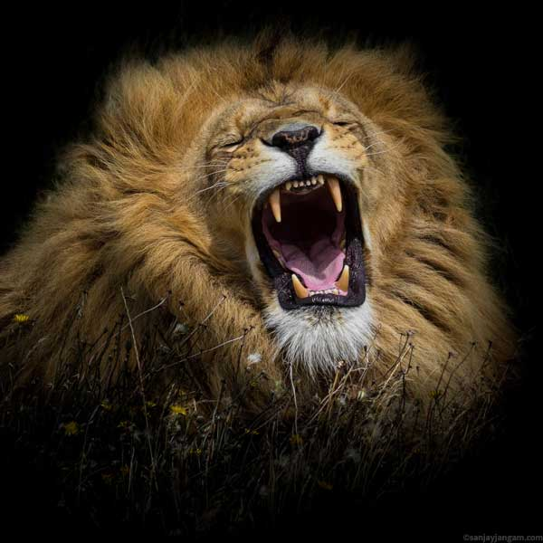

Львы - одни из основных персонажей серии книг, известны своим высокомерием и независимостью.
Львы
Официальное описание
Львы считают себя самыми важными животными в саванне. Прайды называются в честь своего вожака-льва, кто сравним с настоящим монархом. Его супруга — самая важная львица в прайде, а самый сильный его сын унаследует прайд. Охотой чаще всего занимаются львицы, самые умелые охотники в особом почёте. Несмотря на свое высокомерие, львы по-прежнему чтут Закон. Однако они больше не следуют за Великой Матерью.
Образ жизни в книгах
Львиный прайд - большая стая сплочённых и дисциплинированный охотников, которые гордятся своей самостоятельностью и считают унижением подчиняться травоядным слонам. Иерархия в разных прайдах может сильно отличаться или не быть ярко выраженной, но на данный момент известны следующие ранги:
- Вожак - предводитель прайда.
- Заместитель (?) - помощник вожака и его правая лапа. Точное название этого ранга не упоминалось.
- Первая львица - супруга вожака.
- Молодые львы - основные воины и защитники прайда.
- Охотники и охотницы - добытчики пищи. Большинство из них - львицы.
- Наследник - самый сильный сын вожака.
- Детёныши - львята,не получившие имен.
- Наследник - самый сильный сын вожака.
- Детёныши - львята,не получившие имен.
- Наследник - самый сильный сын вожака.
- Детёныши - львята,не получившие имен.
- Наследник - самый сильный сын вожака.
- Детёныши - львята,не получившие имен.
Львицы не могут становиться вожаками, тем не менее, первая львица пользуется огромной властью и часто командует прайдом, если её супруг не может этого сделать; часто она ведёт своих подчинённых в бой. Самцы-подростки почти всегда покидают родной прайд в поисках места вождя. Львы не любят, когда в одном прайде набирается много самцов, так как это ведёт к постоянным дракам за влияние. Стая, состоящая только из самцов, всё равно называется прайдом, а не коалицией.
Когда-то львы верили в Великого Духа, но на данный момент почти не осталось тех, кто почитает его. Однако, некоторые из них придают мистическую силы звёздам.
У львов существует особый свод правил, относящийся к наследованию власти - закон предков.
Образ жизни в реальности
Львы живут семейными группами, или прайдами. Во главе прайда стоит взрослый самец, при котором есть "гарем" из 8-12 самок. Обычно лев никогда не охотится, а днём он лежит в тени и дремлет. Тем не менее лев выполняет роль защитника львиц и детёнышей, в случае опасности нападая на гораздо более крупного врага, чем он. Охотятся только львицы и львы-подростки. Тактика охоты схожа с волчьей: несколько охотников гонят добычу на тех, кто сидит в засаде и атакует спереди. Но в некоторых случаях взрослый самец может принять участие в охоте, напугав добычу и погнав её на других охотников.
По достижению зрелости самцы-подростки изгоняются из прайда и странствуют по саванне, пока не отобьют прайд у другого льва. Его детёнышей завоеватель убивает, чтобы склонить львиц к спариванию, а старый вожак изгоняется.
Иногда самцы-кочевники объединяются в коалиции - так им легче отвоевать прайд и защищать его.
По отношению к своим львятам лев более заботлив, чем львицы и готов часами терпеть игры львят, когда они пытаются отгрызть ему хвост или оторвать гриву. Между членами одного прайда царят дружественные и тёплые отношения.
Внешность
Лев — рекордсмен по высоте в плечах среди всех кошачьих. У львов мощные ноги, сильные челюсти, а клыки имеют длину 8 см. Окрас варьирует от цвета кожи буйвола до желтоватого, красноватого или тёмно-коричневого. Нижняя часть тела льва светлее, чем верхняя, кончик хвоста имеет чёрный цвет.
Львята рождаются с коричневыми пятнами на теле, как у леопардов. При достижении половой зрелости эти пятна исчезают, хотя у некоторых взрослых особей, особенно у самок, они сохраняются на животе и ногах.
Львицы выделяются меньшими размерами и отсутствием гривы. Цвет гривы варьирует от белого до чёрного, а с возрастом всегда темнеет. Кисточка на конце хвоста всегда чёрная и появляется только в возрасте 5-и месяцев.
Имена
Каждый родившийся львёнок получает имя в честь своей матери, например, "сын Стремительной" или "дочь Стремительной". Когда львёнок проявляет отличительную черту характера, вожак прайда нарекает его в честь неё (Доблестный, Гордая). Но имя может означать и внешние качества, например, имена Проворной и Мощного.
Полным именем льва считается его имя с прибавлением названия прайда. Так в оригинале "Бесстрашный из прайда Доблестного" звучит как "Fearless Gallantpride".
Клятвы
Клятва на крови - священный ритуал для каждого льва. Лев, давший клятву, или выполняет её, или умирает (но известны случаи, когда клятвопреступников просто изгоняли).
Дающие клятву оставляют друг другу по одному шраму на шее, произнося священные слова. Клятву верности прайду обычно дают одиночки, вступившие в чужой прайд.
Мы клянёмся тебе в верности. Мы клянёмся в верности прайду Коварного. Мы никогда не поднимем лапу на Коварного. Мы клянёмся всеми способами защищать Коварного и его прайд.
— присяга львов-новобранцев прайду Коварного, "Закон чести", стр. 200-201
— присяга львов-новобранцев прайду Коварного, "Закон чести", стр. 200-201 (второй уровень вложенности)
— присяга львов-новобранцев прайду Коварного, "Закон чести", стр. 200-201
— присяга львов-новобранцев прайду Коварного, "Закон чести", стр. 200-201
— присяга львов-новобранцев прайду Коварного, "Закон чести", стр. 200-201 (второй уровень вложенности)
Известные прайды
- Прайд Доблестного (реформирован в прайд Коварного)
- Прайд Коварного
- Прайд Бесстрашного
- Прайд Властного (Mightypride)
- Прайд Бестрепетного (захвачен прайдом Коварного)
- Прайд Свирепого (реформирован в прайд Могучего)
- Прайд Стойкого (захвачен прайдом Коварного)
- Прайд Честного (захвачен прайдом Коварного)
Интересные факты
Взрослые львы-самцы не охотятся, потому что грива делает их медлительными, неуклюжими и слишком заметными для добычи.